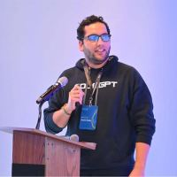

Tobias Kabbeck · 6.–7. Juli 2026 · London, UK & Online
Code schreiben ist billig geworden. Vertrauen nicht.
Co-Authored-By: Claude ausgezähltZwei Sterne heißt: mindestens ein anderer Mensch hat das Repo nützlich gefunden. Anfangs lagen über 90 % aller Claude-Commits unter dieser Schwelle — Lern- und Wegwerfprojekte. Der Anteil sinkt. Die Gesamtmenge ist also kein Beleg. Die 8 Millionen sind einer.
In Nicht-KI-Projekten überwiegen Bugfixes — die Arbeit, die niemand freiwillig macht. Nur KI-Projekte selbst setzen Claude überwiegend für Features ein.
Vorsicht bei der Deutung: Sein Sample sind die meistgesternten Repos — Deno, Bun, Home Assistant. Seine eigene Erklärung: In UI und UX sind Designer und Entwickler noch stärker selbst beteiligt.
Apache Superset ließ Claude vor allem die TypeScript-Qualität von menschlich geschriebenem Code aufräumen. ClickHouse committet im gleichen Zeitraum zehnmal so viel — fast alles CI, Tests, Infrastruktur, damit die Engineers an Features arbeiten können.
Vom Prompt zum System — und woran die Zwischenstufen scheitern.
Zustandslos, jede Session fängt bei null an.
Den Kontext trägt der Mensch von Fenster zu Fenster.
Verliert im langen Thread den Faden.
Und niemand prüft ihn außer er selbst.
Kollabiert am schnellsten.
Fehler heben sich nicht auf, sie multiplizieren sich bei jeder Übergabe.
Novicks Reihe für immer längere Ketten. Fehler heben sich nicht gegenseitig auf, sie multiplizieren sich — jede weitere Übergabe drückt das Ergebnis. Das gilt für jede mehrstufige Kette; der Schwarm hat nur die meisten Übergaben.
Contracts und Grenzen werden mechanisch erzwungen — über Typen, Linting, Tests. Nicht per Absprache in einer Regeldatei.
Kein großer Prompt, sondern strukturierte Übergaben, die den einzelnen Lauf überdauern. Worker arbeiten isoliert.
„Fertig" entscheidet, was nicht halluzinieren kann: Tests, Types, Lint, Build. Nie die Aussage eines Modells.
Nur die Struktur zu ändern — gleiches Modell — brachte in Coding- und Reasoning-Benchmarks 12 bis 23 % mehr.
| Stufe | „Fertig" entscheidet | Im Alltag heißt das |
|---|---|---|
| L0 assistiert | der Mensch | Agent schreibt, Mensch liest und merged jede Änderung |
| L1 orchestriert | der Mensch | System verteilt und übergibt geordnet — reviewt wird weiter alles |
| L2 governed | das Gate | unabhängiges Review plus grüne Checks, dann landet es von selbst |
| L3 resilient | das Gate | System pausiert bei Unklarheit, fragt nach, nimmt selbst wieder auf |
Zwischen den ersten beiden Zeilen und den letzten beiden liegt kein Werkzeug, sondern eine Entscheidung: ob wir einem automatischen Gate zutrauen, für uns zu entscheiden. Alles darüber setzt voraus, dass das Gate wirklich prüft.
Wiederverwendbare Anleitungen statt immer neuer Prompts.
Erklärt Zusammenhänge, begründet Entscheidungen, arbeitet mit Analogien und Beispielen.
Ein Agent braucht davon fast nichts.
Sagt Schritt für Schritt, was zu tun ist. Drei Teile: SKILL.md, deterministische Scripts, Referenzdateien.
Nachladen statt vorhalten.
„Prüfe erst, ob npm installiert ist, suche dann die Pakete …" — jede Zeile Prosa kann mehrere Tool-Calls und je eine Runde zurück zum Modell bedeuten. Dieselben Schritte als Script: ein Aufruf, deterministisch, und testbar.
Geht bei jedem Request mit. Also: Stack und ein paar Regeln, sonst nichts.
Greift nur, wenn er gebraucht wird, bleibt dann in der Session und lädt Referenzen nach.
Eigener Kontext für Aufgaben, die den Hauptthread sonst zumüllen.
Eine Referenzdatei lesen lassen heißt: sie steht vollständig im Kontext. Ein Script ausführen lassen und nur die Ausgabe lesen kostet fast nichts.

Daniel Ávila · Claude Code TemplatesTemplates and Components for Claude CodeSkill-Ordner wachsen nicht geplant, sie wachsen nebenbei. Sein Tool SkillGrade erzeugt aus einer Skill-Datei automatisch Evaluationen und fährt Smoke-Tests. Im Trajectory-Log sieht man dann, an welcher Stelle der Agent falsch abgebogen ist — sein Beispiel: ein Skill bestand 4 von 5 Läufen, es fehlten zwei Anweisungen.
| Aufgabe | Modell | Warum |
|---|---|---|
| Planen, Architektur, harte Analyse | Opus, Fable oder GPT | teuer — aber hier entscheidet sich alles |
| Umsetzung nach Plan | ein günstigeres Modell, er nennt Composer 2.5 | Fleißarbeit mit klarer Vorgabe |
| Review | ein anderes Modell als beim Schreiben | siehe Teil 5 |
| Routine, z. B. Commit-Nachrichten | Haiku, niedriger Effort | Ávilas Empfehlung, nicht Korops |
Offizielle Benchmarks wie SWE-Bench werden von Modellen inzwischen erkannt und bedient — für Alltagsaufgaben sagen sie wenig. Und am Ende entscheidet der ganze Harness: IDE, Skills, Prompts, Guardrails. Nicht das Modell allein.
Ein Umschreibe-Skript löst die vorhersehbare Mehrheit und scheitert am unübersichtlichen Rest — und behauptet dabei, die Migration sei fertig. Genau dieser Rest entscheidet. Also bauten sie stattdessen ein System aus parallel laufenden Agenten — und das läuft nach der Migration weiter: für den nächsten Versionssprung, den nächsten Lint-Rollout.
Agenten reden nie miteinander. Jeder liest festgelegte Zeilen, erledigt eine Aufgabe, schreibt zurück, stoppt.
Version hochziehen, Lockfile, Tests: Skript, kostet nichts — und rät im Zweifel nicht, sondern hält an. Nur das Reparieren braucht ein Modell.
Vorher bauen und testen, festhalten was schon kaputt war. Repariert wird nur, was die Migration neu zerbricht.
Ohne Tests keine Baseline, ohne Baseline keine Autonomie.
Günstiges Modell zuerst, teures höchstens zweimal, dann „stuck" — und das Board zeigt, bei welchem Schritt.
spec.md was am Ende dastehen soll — vorab geschrieben,
nicht im Loop
plan.md die Schritte dorthin, laufend gegen die Spec
abgeglichen — das Herz des Ganzen
agents.md Ausführungsregeln für die Agenten
progress.md wo der Loop gerade steht
loop.sh liest alles und läuftWiederkehrend · überprüfbar · begrenzt
Tests bleiben read-only.
Ein Team ließ über Nacht sechs Projekte bauen — 50.000 $ Budget, 800 $ verbraucht. Der Refactoring-Loop danach lieferte einen PR mit 20.000 Zeilen und 1.600 To-dos. Nicht gemergt, für einen Menschen nicht verifizierbar.
Wer prüft, womit — und warum grüne Checks nicht genügen.
Die 42 % sind Selbstauskunft von Entwickler:innen, erhoben von einem Anbieter, der in dem Feld Produkte verkauft — mit Vorsicht zu lesen. Denselben Befund zeigen die anderen Zahlen, die er zitiert: Review-Zeiten explodieren und 31 % werden ganz ohne Review gemergt (Faros AI), Incidents nehmen zu (Googles DORA-Report). Dazu Code Churn — Code, den man direkt nach dem Merge wieder anfassen muss.
Nicht das Modell, das den Code geschrieben hat — und nicht die Session, in der er entstanden ist. Ebenso wenig taugen KI-generierte Tests für bestehenden Code: die bestätigen nur den Status quo.
Typen · Linting · Tests
Der Code ist gültig und passt trotzdem nicht mehr zum Rest des Systems. Toter Code, Duplizierung, Grenzverletzungen.
# In CLAUDE.md: eine Bitte, die niemand prüft
"Bitte immer die bestehenden Utils verwenden"
# Als Hook vor git commit: eine Bedingung
fallow audit --gate new-only
→ Pass / Warn / Fail
→ nur geänderte Dateien
→ neue Verstöße blockieren
→ geerbte Verstöße nur meldenWaardenburgs Bild: Eine Regeldatei ist die Sicherheitsansage im Flugzeug — wichtige Information, ohne Garantie, dass jemand zuhört. Anthropics Doku sagt es trockener: CLAUDE.md kommt als User-Message, ohne Garantie auf strikte Befolgung. Was an einem festen Punkt laufen muss, gehört in einen Hook.
Man übernimmt seinen blinden Fleck — und hört auf, selbst hinzusehen. Novick schätzt rund 70 % der Fehler auf grüne Checks, die nichts geprüft haben.
Die eingeblendete Tastatur verdeckt den Absenden-Button. Der Release-Build stürzt ab, der Debug-Build lief.
Ein Agent auf Simulator oder echtem Gerät, enge Mission aus den PR-Metadaten. Screenshots als Beleg im PR.
Ein Agent glaubt seinen Werkzeugen. Dieselbe Falschinformation als Text im Prompt: zu 0 % übernommen. Als Ergebnis eines echten Tool-Aufrufs: zu 100 %.
Überall, wo jemand in den Datenstrom schreiben kann. Ihr Beispiel: ein Konto über längere Zeit mit kleinen, unauffälligen Buchungen normal aussehen lassen — dann die eigentliche Betrugstransaktion.
Data Contracts statt reinem Schema-Check — also Wertebereiche und Fachregeln, nicht nur „Feld ist eine Zahl". Dazu Lineage: nachvollziehbar halten, woher ein Wert stammt und was ihn unterwegs verändert hat.
Ein Compile-Fehler zeigt die Stelle. Drift ist ein Laufzeitfehler — man muss den ganzen Lauf nachvollziehen.
Traces und Spans statt Logs: ein Lauf ist ein Trace, jeder Schritt ein Span mit Modell, Tokens, Latenz.
Im Kontextfenster genau dieses Moments. Erst dort nachsehen, dann übers Modelltauschen nachdenken.
Dann werden Läufe geclustert und nach Verhaltensmustern gruppiert — etwa ineffiziente Token-Nutzung oder Nutzer, die im Verlauf zunehmend genervt reagieren. Nur für geschäftskritisches Verhalten lohnt ein Echtzeit-Signal.
Keiner dieser Punkte kam von einem einzelnen Sprecher — sie tauchten unabhängig voneinander auf, in Talks über Skills, Migrationen, Review und Sicherheit. Und keiner davon nennt ein Werkzeug als Antwort.